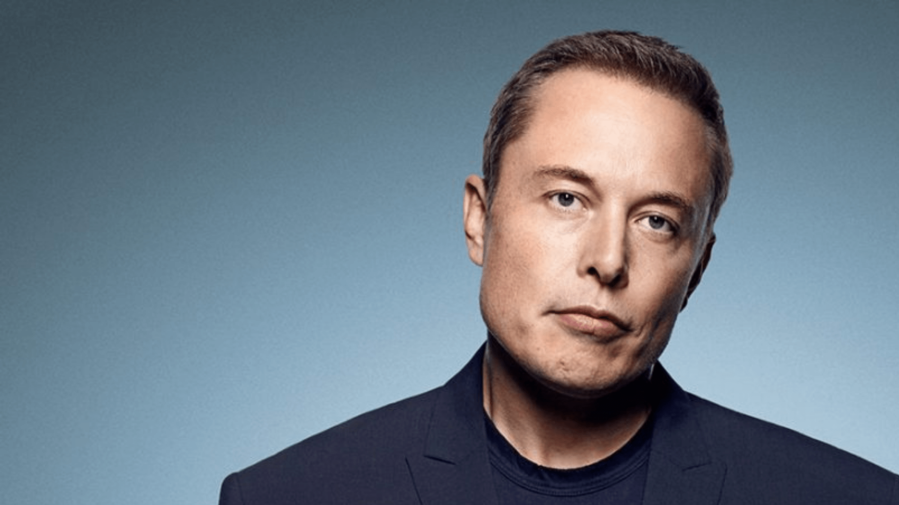
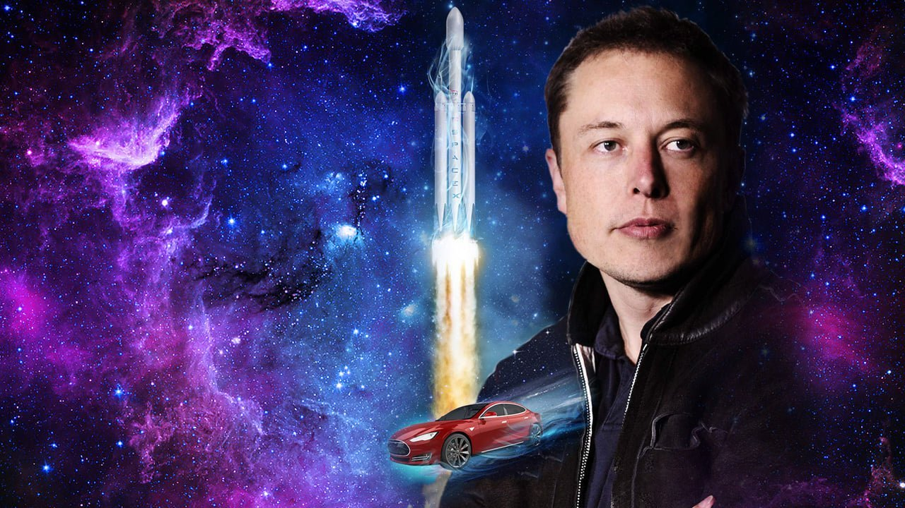

Достижения Илона Маска
Zip2
Это первая компания, которую организовали совместно братья Маск в 1996 году.
Они занимались производством программного обеспечения. Их проектом был цифровой аналог «Жёлтых страниц»,
с помощью которого в любом районе Сан-Франциско можно было найти ближайшую пиццерию.
Стартап развивался не так быстро, как хотелось Илону, но трудолюбие позволило вывести его на такой уровень,
что им заинтересовались инвесторы. Вскоре фирма Compac приобрела Zip2 за 307 миллионов долларов,
22 миллиона достались лично Илону Маску и он в 27 лет стал миллионером.
X.com/PayPal
В марте 1999 года Илон Маск стал одним из основателей X.com (вложив 12 млн собственных сбережений),
намереваясь сделать революцию в сфере банковских платежей. Уже в 2000 году произошло слияние компаний X.com и Confinity,
тем самым объединились системы X.com и PayPal. Маск требовал для нового образования бренд X.com вместо PayPal.
Это вызвало разногласия внутри организации, и Илон по решению Совета директоров ушел в отставку.
Но стратегически и экономически Маск снова сделал верный ход.
В октябре 2002 года PayPal была куплена eBay за 1,5 млрд долларов,
а Илон за свои 11,7% акций получил 175 млн долларов.
SpaceX
В июне 2002 года Маск основал свою третью компанию — SpaceX.
Эта компания Илона связана с космическими разработками, целью ее создания было сокращение расходов на полеты в космос,
способствование его освоению и в частности, будущая колонизация Марса.
Илон Маск стал главным инженером и СЕО SpaceX.
С декабря 2008 года NASA стало сотрудничать с SpaceX. После этого компания запустила не мало ракет и добилась больших результатов.
